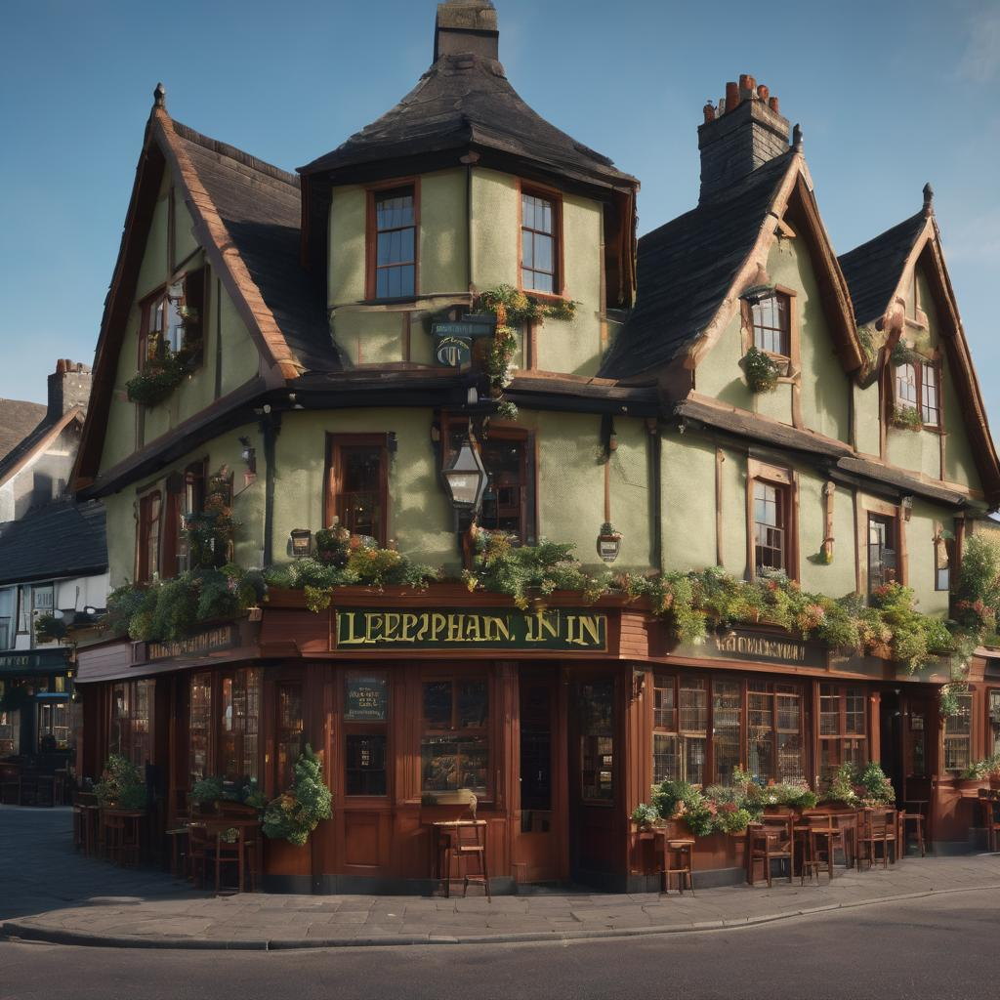
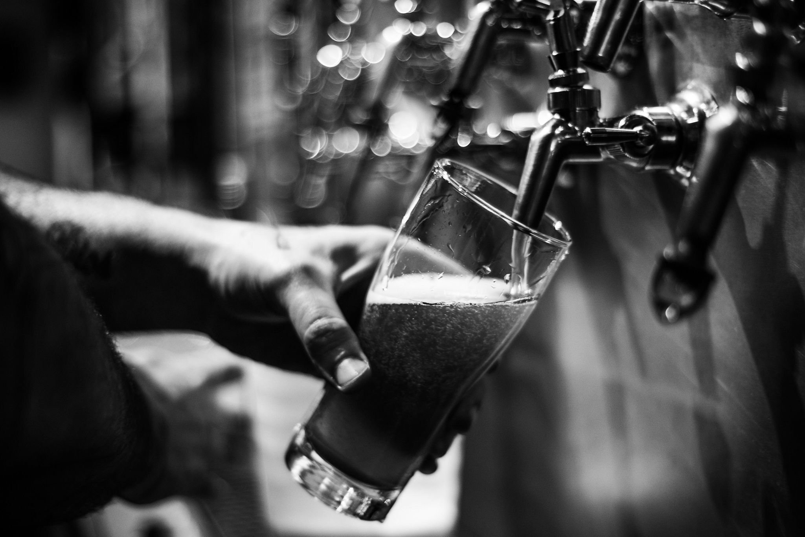

The Leprechaun Inn
The First Pub Established in 800 AD

Welcome to The Leprechaun Inn, where tales of whimsical folklore intertwine with the spirit of good company and great drinks.Nestled within these walls lies a story whispered through generations—a tale of mischievous leprechauns who, as legend has it, hid their treasure beneath the very foundation of our beloved establishment.
While we can't promise you'll find a pot of gold, we do promise an enchanting atmosphere, hearty laughter, and perhaps a sprinkle of that legendary luck
So, come raise a glass with us and immerse yourself in the charm and magic that define The Leprechaun Inn.

Boasting a rich history purpotedly dating back to 800 AD, this legendary pub is shrouded in tales of camaraderie and ancient revelry, a cherished cornerstone of tradition and conviviality.
Our bar has been thoughtfully refurbished to retain the original features that tell the story of history within Athlone.
The Leprechaun Inn is open 7 days a week from 12 PM to late. Music 7 nights a week from 9 PM. Every sunday:3 PM - 6 PM.
Our mission is to give you an authentic local bar experience where you can enjoy Irish music, extensive range of drinks or pints in a historic surroundings.
 leprechauninn@info.ie |
leprechauninn@info.ie |  Athlone, Co Westmeath |
Athlone, Co Westmeath |  +353 12 321 3454
+353 12 321 3454